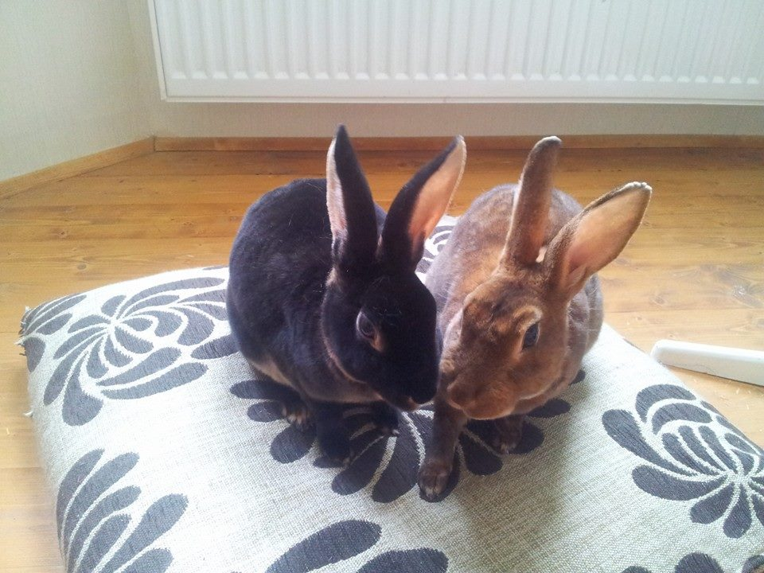

Loomad
Kellega tegu?

Tobi
Musta värvi isepäine marakratt, kellele meeldib joosta ja mängida.
Tümpsa
Pruuni värvi paimaias marakratt, kes vaatab alati uurivalt ringi,
kuhu saaks hüpata, pugeda või hambad sisse lüüa.
Loe lisaks:
Küülik koduloomana
Küüliku pidamine